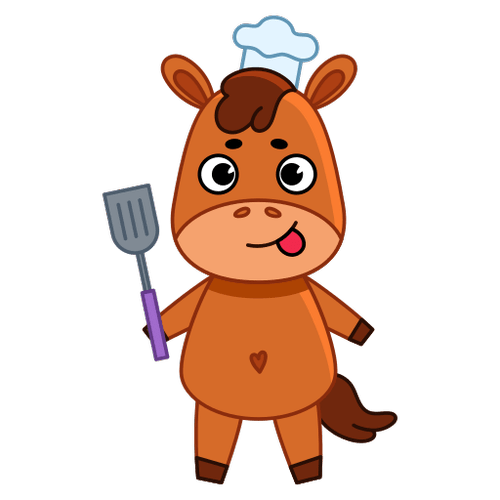
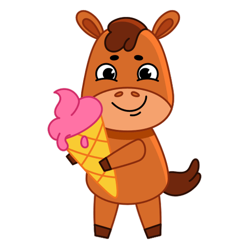

Get some expert advice on feeding your horse.
Underweight
Feeding an underweight horse
Manage weight
Feeding a healthy horse
Overweight
Feeding an overweight horse
 Our top tips for looking after
an underweight horse:
Our top tips for looking after
an underweight horse:
Assess:
Evaluate the horse's body condition score (BCS) to determine the severity of underweight. Look for signs of malnutrition such as prominent ribs, hip bones, and a lack of muscle tone.
Forage:
Provide high-quality forage such as grass hay or alfalfa to meet the horse's basic nutritional needs. Ensure the forage is free from mold, dust, and contaminants that could cause digestive issues.
Supplements:
Supplement the horse's diet with concentrates such as grain or commercial feed designed for underweight horses. Choose feeds high in protein, fat, and easily digestible carbohydrates to support weight gain and muscle development.
Feed Small & Frequent Meals:
Divide the horse's daily ration into several small meals to promote efficient digestion and nutrient absorption. Avoid overfeeding or sudden increases in feed volume to prevent digestive upset.
Monitor Weight:
Weigh the horse regularly to track progress and adjust feeding accordingly. Aim for gradual weight gain of 1-2 pounds per day to avoid metabolic issues associated with rapid weight gain.
Dental Care:
Schedule regular dental exams and floating (rasping) as needed to maintain proper chewing and digestion. Dental issues can interfere with the horse's ability to eat and absorb nutrients effectively.
Parasite Control:
Implement a regular deworming program as recommended by your veterinarian to control internal parasites. Parasite infestations can contribute to weight loss and poor condition in horses.
Exercise and Turnout:
Incorporate regular exercise and turnout into the horse's routine to promote muscle development and overall fitness. Gradually increase exercise intensity as the horse gains weight and strength.
Follow these simple steps and regain your horses health! Or for more advice contact your local vet.

 Our top tips for looking after
a healthy horse:
Our top tips for looking after
a healthy horse:
Forage:
Ensure your horse has access to good-quality forage such as grass hay or pasture. Forage should make up the majority of the horse's diet and provide essential fiber and nutrients.
Monitor Weight:
Regularly assess your horse's body condition score using a standardized scale. Aim for a score of 5 on a scale of 1 to 9, indicating an ideal body condition with moderate fat cover over the ribs and a visible waist when viewed from above.
Balanced diet:
Offer a balanced diet that includes a combination of forage and concentrates, such as grains or commercial feeds. Choose feeds that are appropriate for your horse's age, breed, workload, and any specific dietary requirements.
Feeding Schedule:
Feed your horse small, frequent meals throughout the day to promote healthy digestion and prevent digestive issues like colic or gastric ulcers.Avoid large meals or long periods without food.
Regular exercise:
Provide regular exercise and turnout for your horse to maintain muscle tone, cardiovascular fitness, and mental well-being. Incorporate a variety of activities such as riding, lunging, or turnout in a safe and suitable environment.
Vet checks:
Schedule routine veterinary check-ups, vaccinations, and preventive care to monitor your horse's health and address any issues promptly. Discuss your horse's nutritional needs and management with your veterinarian to ensure optimal health and well-being.
Social Interaction:
Horses are social animals and thrive on companionship. Provide opportunities for social interaction with other horses through turnout or paddock buddies to reduce stress and promote mental stimulation.
Follow these simple steps and regain your horses health! Or for more advice contact your local vet.

 Our top tips for looking after an overweight horse:
Assess:
Evaluate the horse's body condition score (BCS) to determine the severity of overweight. Look for signs of overnutrition such as excessive fat deposits, particularly around the ribs, hip bones, and neck.
Forage:
Provide high-quality forage such as grass hay or alfalfa to meet the horse's basic nutritional needs. Ensure the forage is provided in controlled amounts to prevent overconsumption.
Supplements:
Consider limiting concentrates and commercial feeds to avoid further weight gain. If necessary, opt for supplements that provide essential nutrients without excess calories.
Feed Small & Frequent Meals:
Divide the horse's daily ration into several small meals to promote efficient digestion and prevent overeating.
Monitor Weight:
Weigh the horse regularly to track progress and adjust feeding accordingly. Aim for gradual weight loss to avoid metabolic issues associated with rapid weight reduction.
Parasite Control:
Implement a regular deworming program as recommended by your veterinarian to control internal parasites. Parasite infestations can contribute to weight loss and poor condition in horses.
Exercise and Turnout:
Incorporate regular exercise and turnout into the horse's routine to promote weight loss and overall fitness. Gradually increase exercise intensity as the horse loses weight and improves fitness.
Follow these simple steps and regain your horses health! Or for more advice contact your local vet.